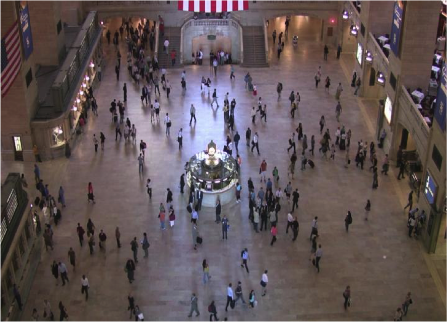
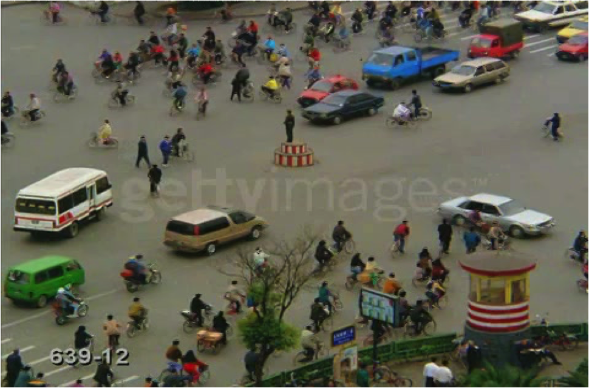
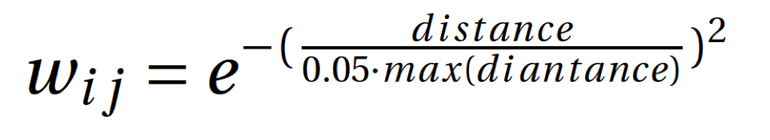
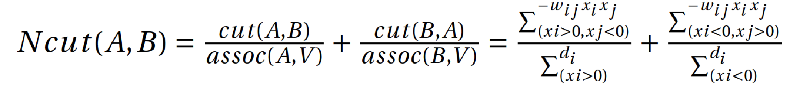
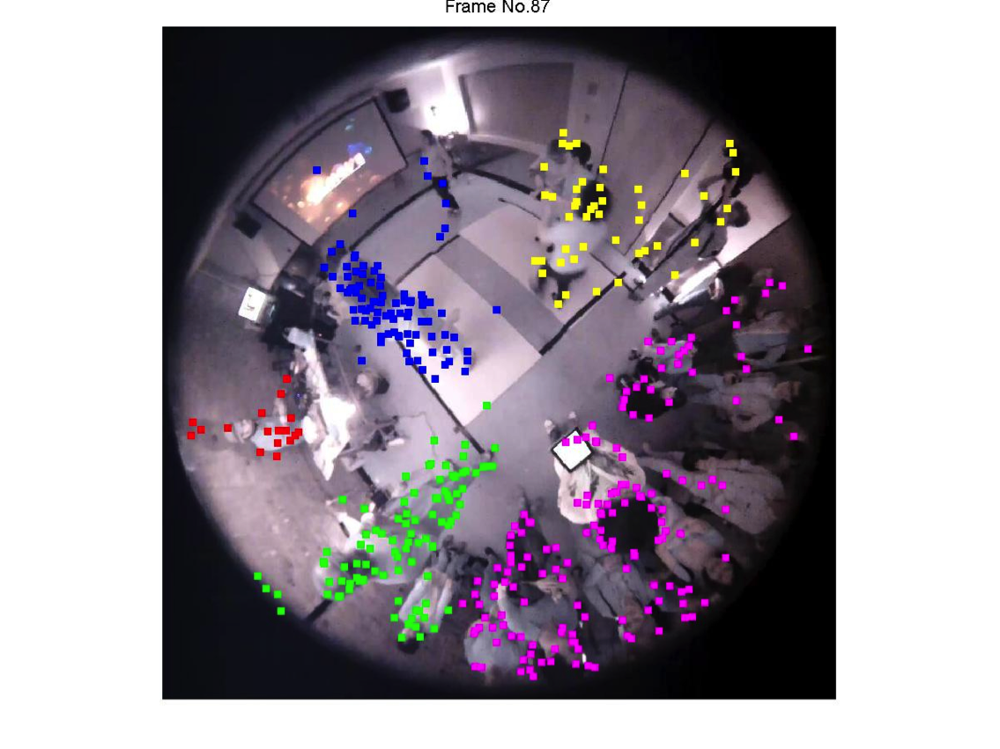
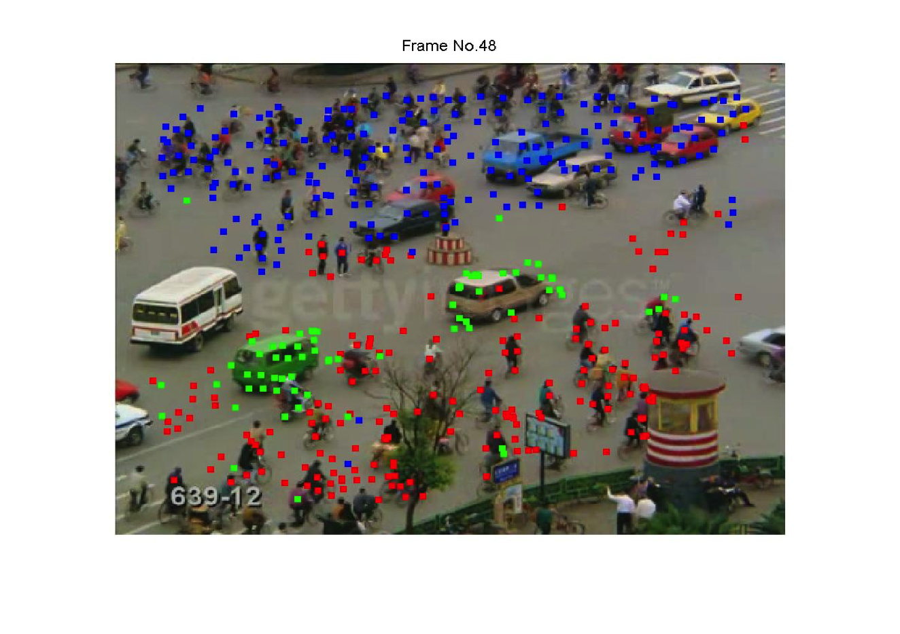
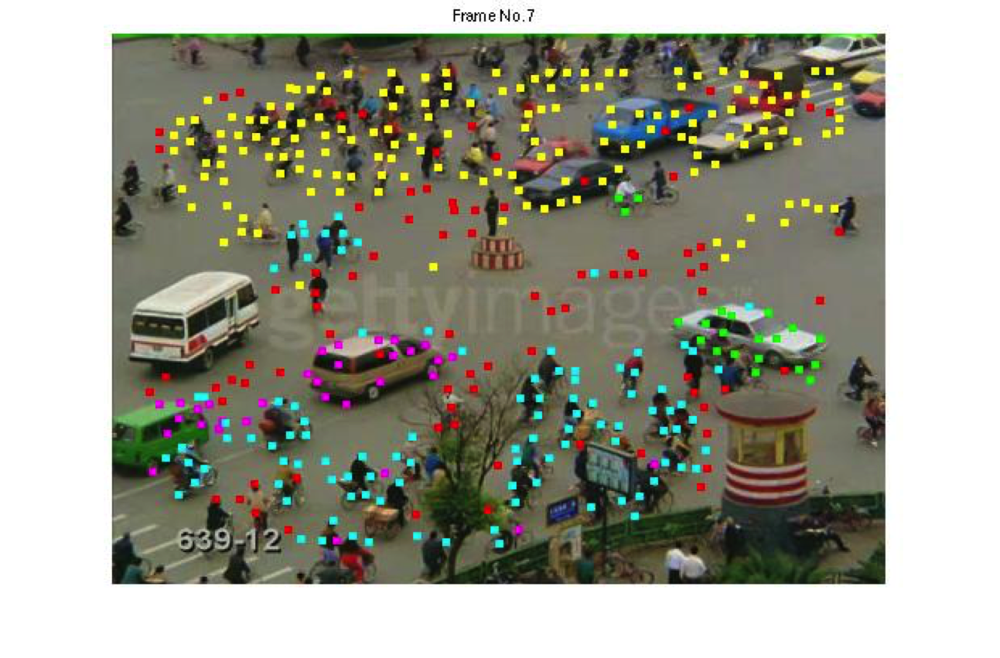

1. Motivation
As human can group image segments to obtain meaningful higher-level structure very easily, grouping or clustering objects automatically and meaningfully by machine or computer still remains a challenging problem. Applications such as Crowd Understanding require fast object clustering in real time.In our current research project, we would like to group people by their social behaviors in a dancing party scenario from a video clip captured by a low-resolution fish-eye camera.
|  |  | (in NYU).3gp_000007.033.jpg)
|
Figure 1: Group people by their motion.
The objectives of this project are
1. Clustering objects based on underlying spatial and coherent motion relationship;2. Generate high-level semantic labels in real time.
Demo Videos of semantic clustering:
2. The Technique:
- Use the KLT tracker to generate feature points’ trajectories information across about 200 frames.
- Find the invariant neighborhood for each trajectory segment. Within each invariant neighborhood, move every two trajectory segments together by offset, and compare their shape similarity.
- Treat 5-frame long trajectory segments as an undirected graph G = (V, E) with weighted edges between neighboring nodes defined as: 
- Using Normalized Cut proposed by Shi and Malik to get the eigen vectors: 
Such Graph Theory based technique (graph cut) is especially noticeable due to its global optimization, practical efficiency, and applicability to high dimension problems.
| Clustering Method 1: Recursive Two-Way N-cut: Bipartition the graph by finding the second smallest eigenvector; recursively repartition the segmented parts if necessary. |
| Clustering Method 2: Simultaneous K-Way Cut: Using multiple eigenvectgors. Since all eigenvectors of this system is perpendicular to each other. |
| Clustering Method 3: K-means clustering using N-cut eigenvectors as reduced features: Instead of directly thresholding eigenvectors, forming a reduced feature space using each row from N-cut eigenvectors and cluster by simple methods such as K-means, etc. |
3. Results and Applications
|  |  |  |
4. Reference
Shi, Jianbo, and JitendraMalik. Normalized cuts and image segmentation. Pattern Analysis
andMachine Intelligence, IEEE Transactions on 22.8 (2000): 888-905.Bolei Zhou, Xiaoou Tang, and Xiaogang Wang. "Coherent Filtering :Detecting Coherent Motions from Crowd Clutters." Proceedings of 12th European Conference on Computer Vision (ECCV 2012)
Last update: Oct 1, 2014